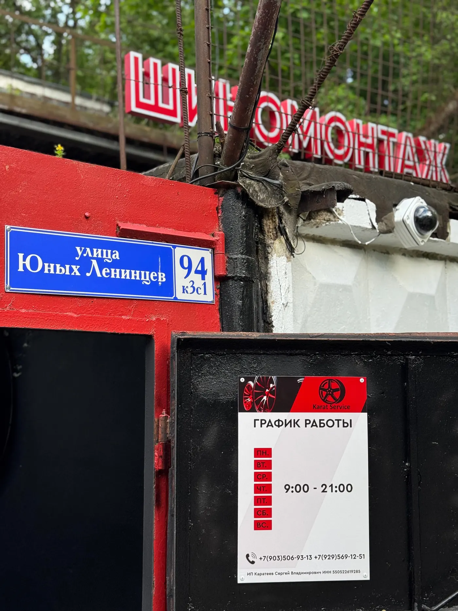
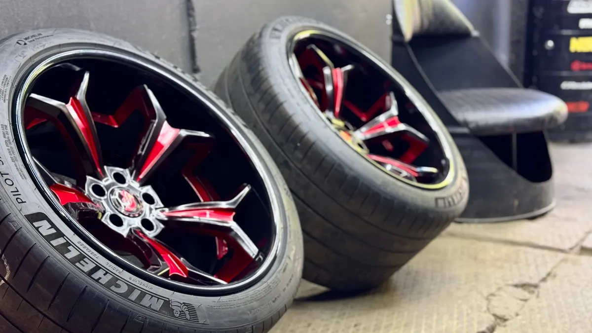
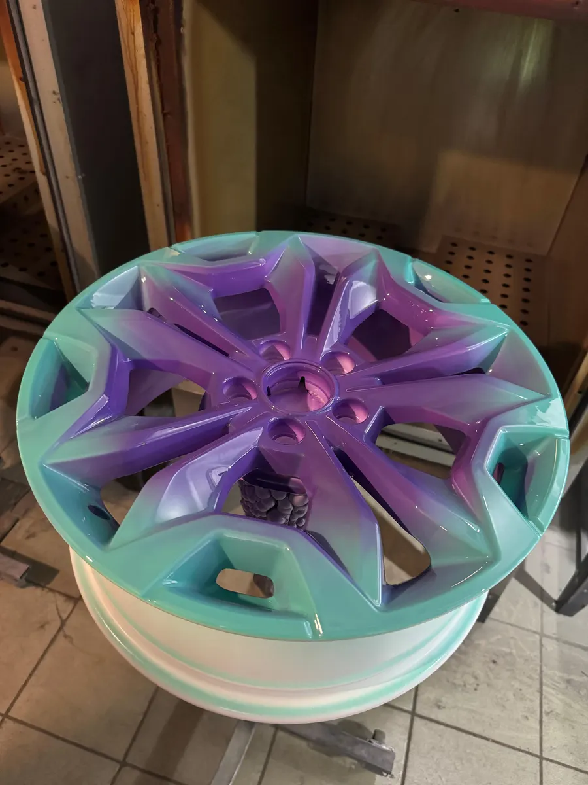
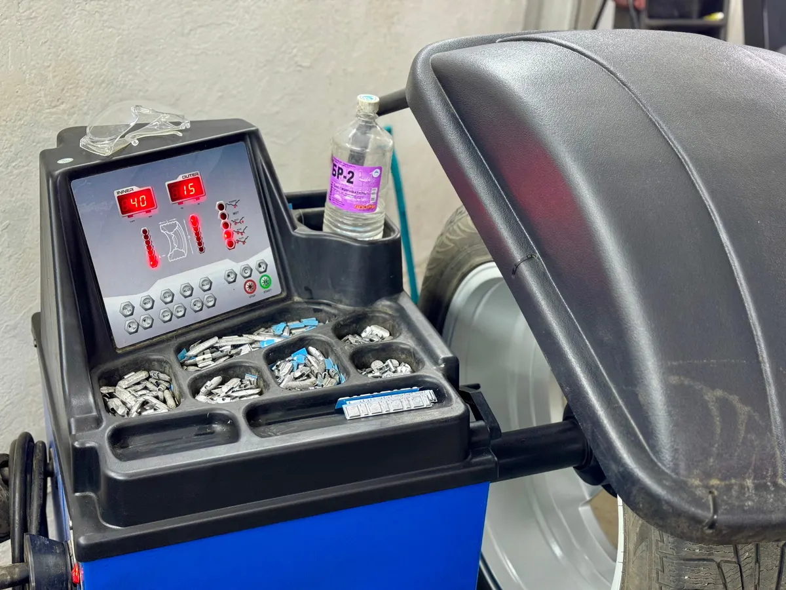

Шиномонтаж · Москва, Кузьминки
Шиномонтаж и покраска дисков в Москве – с гарантией
Кузьминки, улица Юных Ленинцев, 94, корп. 3, стр. 1. Красим, правим и варим литые диски, переобуваем по записи.

- Каждый день с 09:00 до 21:00
- Запись по телефону
- Оплата картой, СБП или наличными
Цены
Шиномонтаж считаем по радиусу. Цену на покраску дисков уточняйте по телефону.
Шиномонтаж, комплект 4 колеса
- R13–R15от 1 560 ₽
- R162 720 ₽
- R17–R18от 2 960 ₽
- R19–R20от 3 320 ₽
- R21–R23от 3 960 ₽
- Джип, микроавтобусот 2 600 ₽
Диски, ремонт, хранение
- Покраска дисковуточнить
- Правка литого дискапо диаметруот 700 ₽
- Аргонная сварка200 ₽ за 1 см
- Ремонт прокола300 ₽
- Ремонт шиныбоковой прокол – от 500 ₽от 1 500 ₽
- Сезонное хранение шинот 2 000 ₽ за сезон
В цену комплекта входят съём и установка, демонтаж, монтаж и балансировка. RunFlat считается отдельно.
Как проходит
- 01
Звоните и записываетесь
Говорите, что нужно: переобувка, ремонт или покраска дисков.
- 02
Приезжаете к своему времени
Красные ворота с вывеской «Шиномонтаж» на Юных Ленинцев, 94, корп. 3, стр. 1.
- 03
Снимаем колёса и чистим ступицы
Гайки доворачиваем динамометрическим ключом.
- 04
Снятый комплект упакуем
Сложим в пакеты и погрузим в машину.



За чем к нам едут
Покраска и реставрация дисков
В родной или новый цвет, с алмазной проточкой.
Ремонт сложных повреждений
Боковые порезы, трещины на литье, правка дисков.
Гарантия на работы
Условия назовём при записи.
Отзывы с Яндекс.Карт
«Отличный сервис по покраске дисков, делают быстро и качественно, а цена вообще сказка. Красили диски на мазду СХ5, вышло восхитительно. Буду рекомендовать вас друзьям. Спасибо!»
Игорь Б. · 27 июня 2025
«Красил здесь диски, с алмазной проточкой. Всё четко. В понедельник привез, в четверг пришла смс что можно забирать. По работе вопросов нет, парни своё дело знают.»
Павел Мануйлов · 1 августа 2025
«Благодарю мастера за оперативность и качество! Цены хорошие, обслуживание огонь, в клиентской зоне намного красивее чем на всех шинках)»
Алексей · 6 февраля 2026
Отзывы с карточки на Яндекс.Картах, без правок.
Контакты
- Адрес
- Юных Ленинцев, 94, корп. 3, стр. 1, Москва
- Часы
- Каждый день 09:00–21:00
- Телефон
- +7 (903) 506-93-13